Overview
This control allows files to be uploaded to a DynaForm, and attached to the current case. To attach files use the "Choose Files" button when this control is rendered. Select the files to be attached following the procedure of the browser and they will be listed in the field below. The icon of this control in the toolbar of the designer is the following:
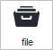
Wile designing a Dynaform, it is neither possible to upload any file nor have a preview of it. However, it's inside the designer that the control is added, located and configured. It's represented by the following figure:
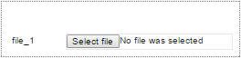
This control allows users to attach as many files as necessary to the Dynaform. When running a case or previewing a Dynaform, it is displayed as follows:

From version 3.0.1.5 on, it is also possible to view the link of the file previously attached to a form, after submitting or sending the form, when returning to a "Previous Step".
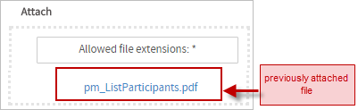
A file control can be set as grid column. Nevertheless, when a grid contains a file field, files can be uploaded for each row in the grid. However, if that same grid is redisplayed in a subsequent DynaForm, the uploaded files will not be displayed in the grid. Please consider this section as a workaround.
Properties
It is possible to customize a file control's functionality and behavior, by configuring its properties:
| Type | file (readonly) |
| Variable | Click on the ... option to select the variable from the list of available variables. See this section to learn more of how to relate a variable to a control.
Available Version: Available in version 3.0.1.5 and later. |
| Variable Data Type | After a variable has been related to the control, this property shows the data type of the variable (readonly). |
| ID | [Required] Field and HTML unique identifier. |
| Name | HTML Field name |
| Label | The label of the control |
| Hint | Used to show help when the control is rendered (in the preview or when running cases). It is shown when the pointer of the mouse is hovered over the ? icon. |
| Required | By checking this option, an asterisk is added in the label to indicate that the field is required, meaning that a file must be uploaded to the field.
Note: The "required" property only validates if there is a file attached to the web control, and not if the current user attaches a new file. |
| File extensions | Set in this property the validation of the file extensions. Use a comma to separate all the extensions that will be enabled for the control. For example “ If this property is not defined, then any file extension is allowed. |
| Max File Size | Validate the maximum allowed file size of the file to be uploaded. By default the maximum file size is 1024 KB. |
| Size Unit | Define the unit (KB or MB) of the maximum file size. |
| Display Mode | [Required] Display mode:
|
File Extensions
The "File extensions" property defines the allowed extensions of the files that can be uploaded in the file field:
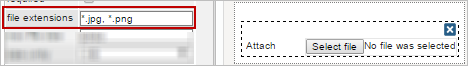
The allowed extensions are defined in the format filename.extension. Use * (asterisk) as a wildcard. * alone would allow all types of files. Use *.extension to allow a specific type of file, such as *.pdf or *.doc. To allow multiple types of files, separate them with , (commas). For example, *.png, *.jpg, *.jpeg, *.tif, *.tiff, *.gif would allow only image files.
For example, if only PDF files may be attached to the file control, then define this property as *.pdf. When running cases, the File control will indicate what type of file can be uploaded:

If a file named pm_ListParticipants.pdf is uploaded, then the file control will validate it the DynaForm is submitting.

If a file with a different extension is attached, a validation error message is shown:
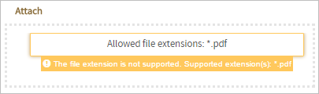
Considerations:
-
For file fields which are NOT required
- If the field accepts all file extensions and no file is attached when running a case, then the validation passes and the form can be sent or submitted without restrictions.
- If the field accepts all file extensions and a file is attached when running a case, then the validation passes unless it has the size limit, in that case another validation, explained in the next property is evaluated. Nevertheless, if the field only accepts some types of extensions and no file is attached then, the validation passes
- If the fields only accepts some types of extensions and no file is attached then, the validation passes and the form can be sent or submitted without restrictions.
- If the fields only accepts some types of extensions and a file is attached then, the validation passes unless the user attaches a file with a "no valid" extension. In that case, a message is shown with a warning that indicates that the file extension is not supported. Nevertheless, if the fields only accepts some types of extensions and no file is attached then, the validation passes.
-
For required file fields
- If the field accepts all file extensions and when running cases, no file is attached then, the validation FAILS (because of the Required Field) and the form can NOT be sent nor submitted.
- If the field accepts all file extensions and when running cases, a file with that extension is attached then, the validation PASSES unless it has the size limit, in that case another validation, explained in the next property, is evaluated.
- If the fields only accepts some types of extensions and no file is attached then, the validation FAILS (because of the Required Field) and the form can NOT be sent nor submitted.
- If the fields only accepts some types of extensions and a file with the correct extension is attached then, the validation passes unless the user attaches a file with a "no valid" extension. In that case, a message is shown with a warning that indicates that the file extension is not supported. In that case, the form can NOT be submitted until a valid file is attached.
-
Special case
- When running cases, if a file is attached to a field which is required and then the form is submitted to the next step but then the user goes back to the previous step, the file already submitted is shown as a link under the attachment button of the file field. But, even if the field is required, as a file is already attached to the field, it is not necessary for the user to attach a new document and the form can be submitted or sent without any restriction.
-
File field in a grid
- Files in grids have the same considerations as explained above, but in cases when the grid is not associated with any grid and a valid file is attached and sent, the new date is not inserted in the data base. This is because the grid MUST have a associated variable so the data will be correctly saved.
Max File Size
This property defines the maximum allowed size of uploaded files. By default, this property is set as 1024 KB. To define this property, enter a positive number greater than zero:

To set it to "unlimited" size, leave this field blank.
When running a case, the file field will validate the size of the file before attaching it to the field. If the size of the file surpasses the size defined in this control, a message is shown and the file is not attached to the field:
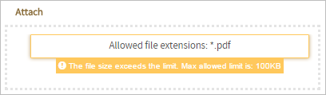
Considerations:
-
For file fields which are NOT required
- If the max file size limit validation for the file attached FAILS, the file is not attached in the field. Nevertheless, as the field is not required the form can be submitted or sent.
-
For required File fields
- If the max file size limit validation for the file attached FAILS, the file is not attached in the field and the form CAN NOT be submitted nor sent.
-
Special case
- When running cases, if a file is attached to the field (which is required) and then the form is submitted to the next step but then the user goes back to the previous step, the file already submitted is shown as a link under the attachment button of the file field. But, even if the field is required, as a file is already attached to the field, it is not necessary for the user to attach a new document and the form can be submitted or sent without any restriction.
-
File field in a grid
- Files in grids have the same considerations as explained previously, but in cases when the grid is not associated to any grid and a valid file is attached and sent, the new date is not inserted in the data base. This is because the grid MUST have a variable associated for the data to be sent correctly.
Size Unit
This property defines the unit (KB, MB) of the size defined in the "Max File Size" property explained previously.
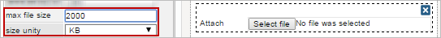
When running a case, the control will validate the size of the file before attaching it to the field. If the size of the file surpasses the size defined in this control, a message like the following is shown:
File Control Example
For this example add a "file" control by dragging and dropping it onto the Dynaform Designer, from the Web Controls panel. The result of adding this kind of control is shown in the image below.
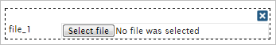
Immediately after adding the control a "Create Variable" window will appear, which has been added from version 3.0.1.7. A variable can be created directly from this window or select a variable already created from the process variables. To learn more about this new feature read this documentation. Also a variable can be created using the variables interface by clicking on the Variables button. For this example a completely new variable will be created so stay on the "Create Variable" option(radio button). Maintain the "Variable Name" as "filevar" but this name can be changed by simply erasing this name and adding a new one. Click on the underlined "Settings" option to display more configuration for the variable.

Once displayed the "Settings" option will change depending on the control that has been aggregated. For example, the "file" control only has two settings which are "Type" and "Input Document"(required field). The "Type" setting has only one option that is "File", for the "Input Document" setting an already existent input document must be chosen for the control. To learn how to create an Input Document, read this documentation. To add an document simply click on the underlined ellipsis as seen in the image below.

A new "Input Documents" window within the "Create Variable" window will appear. Select the available Input Document by clicking on it. Then on the "Create Variable" window click on the "Save" button to finish this configuration.

Click on the empty space of the control and its properties will be displayed on the left side panel.

Another way to add a variable is by exiting the "Create Variable" window and from the properties click on the underlined ellipsis from the "variable" property as observed in the image.
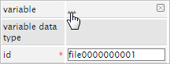
The "Create Variable" window will appear where a variable can be create with the "Create variable" radio button or select a new one from the "Select variable" radio button. Once a variable is chosen the "variable data type" and the "id" properties will gain the name of the variable added.
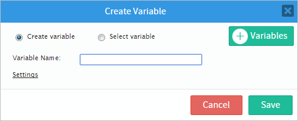
Now, the "id" property can be used with JavaScript code. To do so click on the light grey border of the DynaForm (which is the space outside the controls) to display the properties of the DynaForm. When the properties are displayed locate the "javascript" property and click on the "edit" button to open an editor.
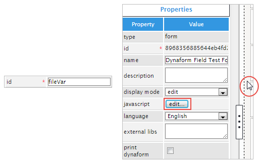
On the javascript editor add code to set the label of the control, read this section for more information. Use one of the functions mentioned in this section. For this example, add the following code:

When the control is rendered the label will be then set to "ProcessMaker" as seen in the image below.

The following property is the "Name" property which is an HTML Field name. It is possible to add a name to some controls managed inside the designer. By default, the control with this property has the same name as the ID set by default. When the ID is changed by the user, the name does not change and keeps its original configuration. The name can also be changed by entering a new value in the property.
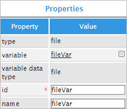
Continuing on, the "label" property will change the label of the control which will be displayed when rendered. Add a label such as "Upload a File:" and the control will look like the illustration.
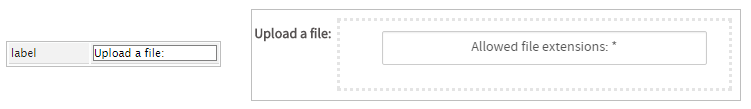
The "hint" property is used to show help when the control is rendered. For this example add the following sentence on the property: "Select a file to upload". When the control is rendered hover the pointer of the mouse over the (i) icon to show the hint added.
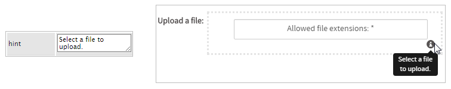
For the "required" property there is only a checkbox available. When checked an asterisk is added next to the control to indicate that the field is required and the form won't be able to move into the next one until the field is properly filled.
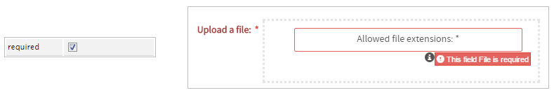
The "file extensions" property validates the file extensions. Use a comma to separate all the extensions. For this example add the .doc extension. This means that the control won't accept other extensions besides the one added in the control.

Now, the "max file size" and the "size unit" will determine the maximum allowed file size and will define the size unit (KB, MB) of the file uploaded.
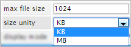
Finally, the "display mode" control will have different effects when rendering a case. Use the illustration below as guide of the properties functionality.

Associating an Input Document with a File
Available Version: ProcessMaker 3.0.1.5 on.
From version 3.0.1.5 on, it is possible to associate an Input Document with a File field inside a DynaForm by using a "File" variable. This means that files uploaded to a File field in a DynaForm can be displayed at a later point inside an Input Document step. One advantage of associating a File field with an Input Document, is that the Input Document interface can be used to view all the files uploaded (and delete files and add new versions if the user has the Process Permissions and versioning is enabled). Another advantage is that Input Documents all the uploaded file to have tags and to be placed in a specified folder under Home > Documents, so it is easier to later find the uploaded files.
Uploading a file to an Input Document through a File field in a DynaForm is useful if only needing to upload one file to an Input Document. If needing to ensure that the user uploads a file to an Input Document, then make the File field required. It is not possible to associate File fields in a grid to an Input Document, because fields inside grids do not have a variable. If needing to upload more than one file to an Input Document, then a normal Input Document step should be used.
To associate an Input Document with a File field, it is very recommended to first create the Input Document in the project. Then, create the variable that will be related to the File control. To do this, go to the Main Toolbox of the Process Map and hover the pointer of the mouse over the + icon of the "Variables" option. Click on the option "Create" that is displayed to the left. In the window that is opened, enter the name of the variable in the "Variable Name" field and select the option "File" from the dropdown in the "Variable Type" field. (See Defining Variables.)

Associate the variable with the Input Document (which is already created) in the field "Related Input Document", by selecting it in the dropdown box, or by creating a new Input Document by clicking on the Create button on the right-hand side.
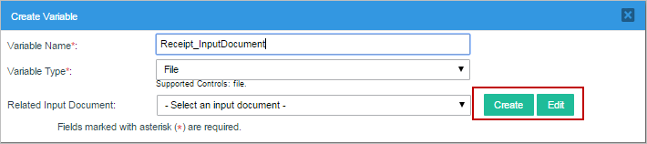
To edit the Input Document selected in the field "Related Input Document", click on the Edit button.
After creating the File variable, open a DynaForm where the File control will be placed. Add a File field to the design and click on it to view its properties. Go to the Variable property and click on the ... button.
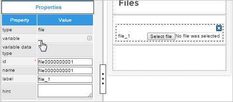
Select the File variable that will be associated with the File control from the list of available File variables.
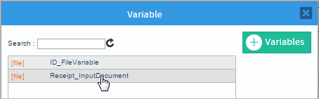
After selecting the variable, the Input Document will be associated with the control.
After associating the File variable with the control, the File Extensions, Max File Size and Size Unit properties will be disabled. These properties are automatically set to the settings for the Input Document in the Allowed file extensions, Maximum file size and Unit fields, respectively. when it was created. Make sure to set a Max File Size greater than zero for the Input Document.
Note: The file fields fails to respect the configuration made in the PATH of the Input Document. This consideration will be solved in future versions.
Warning: The "name" of the File field must have the same name as the variable for the field. If they are different, then uploaded files will not be associated with the Input Document and be treated as normal attached files.
Accessing Files with JavaScript
To learn how to manipulate DynaForm controls using JavaScript, see JavaScript in DynaForms.
Files in ProcessMaker 3 have the following field components:
- Label: The text displayed above or to the left of the field, which identifies it.
- Value: The filename of the last file selected in the file control.
- Text: An array of the filename(s) in the file control.
JavaScript Methods
Some of the JavaScript methods to manipulate file fields include:
| Method | Description |
|---|---|
jQuery("#fieldID").getValue() |
Returns the filename of the last file selected in the file control or the last file added to its associated Input Document if no file has been selected. |
jQuery("#fieldID").getText() |
Returns an array of the filenames for files which were previously added to the Input Document associated with the file control, plus the filename of the last file selected in the file control (if any). The filenames are in the order that the files were added. Remember that only one file can be added by the file control, but there can be multiple files which have already been added to the Input Document. |
jQuery("#fieldID").getLabel() |
Returns the field's label, which is the text displayed above or to the left of the field to identify it. |
jQuery("#fieldID").setLabel("newLabel") |
Sets the field's label, which is the text displayed above or to the left of the field to identify it. |
Note: The setValue() and setText() methods exist for file controls, but do not have any effect, since files can only be selected manually by the user.
To see code examples for these methods, see JavaScript Functions and Methods.
Clearing File Controls
The file selected in a File control cannot be set using JavaScript, because this requires user action. However, it is possible to use JavaScript to clear the selected file in a File control.
To remove the selected file, change the value of the file field with the ID "form[file-id" to "". Also, change the value of the hidden field with the ID "form[file-id_label]" from '["filename"]' to '[]' (an empty array in a JSON string). The filename of the selected file also need to be replaced in the visible button with the phrase "Allowed file extensions: *".
Note that * depends on the configuration of the File control (or its associated Input Document), so it is recommended to save the text in the File's button when the DynaForm first loads.
For example, a DynaForm has a File control with the ID "contractFile" and button with the ID "clearContract".
The following JavaScript code clears the "contractFile" when the user clicks on the "clearContract" button:
$("#contractFile").find('input[type=file]').val(""); //clear file field
$("#contractFile").find('input[type=hidden]').val("[]"); //clear hidden field
$("#contractFile").find("button").html("Allowed file extensions: *");
$("#contractFile").find("button").prop("title", "Allowed file extensions: *");
});
Structure of File Controls
A file control consists of:
- A visible
<button>with the ID of the file control, which is clicked to select a file to be uploaded. After a file is selected, the name of the selected file is displayed in this button. - A hidden file field with the ID
"form[id]", where the selected file is temporarily stored. - A hidden input field with the ID
"form[id_label]", which holds an array of the files which have been previously uploaded to the Input Document associated with the file control, plus the last file selected with the file control.
For example, a file control with the ID "receipts" might have the following HTML structure:
<label for="receipts" class="col-md-2 col-lg-2 control-label pmdynaform-label">
<span class="textlabel">Receipts</span>
</label>
<div class="pmdynaform-file-control col-md-10 col-lg-10 pmdynaform-field-control">
<div class="pmdynaform-file-container col-xs-12 col-sm-12 col-md-12 col-lg-12">
<div class="pmdynaform-file-btn-container">
<button title="receipt_2015-02-25.doc" type="button" class="pmdynaform-control-file form-control">receipt_2015-02-25.doc</button>
</div>
<input id="form[receipts]" name="form[receipts]" style="visibility:hidden;" type="file">
<input value="["lunchReceipt_2015-02-25.jpg"]" id="form[receipts_label]" name="form[receipts_label]" type="hidden">
<div name="button-all" class="btn-group btn-group-justified" style="display: none;">
<div class="pmdynaform-file-buttonup btn-group">
<button class="glyphicon glyphicon-upload btn btn-success btn-sm">
All
</button>
</div>
<div class="pmdynaform-file-buttoncancel btn-group" style="display: none;">
<button class="glyphicon glyphicon-remove btn btn-danger btn-sm">
All
</button>
</div>
<div class="pmdynaform-file-buttonremove btn-group">
<button class="glyphicon glyphicon-trash btn btn-danger btn-sm">
All
</button>
</div>
</div>
<div class="pmdynaform-file-list" style="display:none"></div>
</div>
</div>
</div>
The user interacts with the visible button, which doesn't have an ID, but it can be searched for using its "pmdynaform-control-file" class. For example, the following code changes the border color of the button used by the "receipts" file control:
The setOnchange() method doesn't work with file controls, but the hidden file field can be used to set a change event handler. For example, the following event handler checks whether the uploaded file matches the pattern receipt_YYYY-MM-DD.doc, so that its filename contains the date:
//if filename doesn't match "receipt_YYYY-MM-DD.doc":
var n = this.value.search(/receipt_20[0-9][0-9]-[0-1][0-9]-[0-2][0-9]\.doc$/g);
alert (n);
if (n === -1) {
alert("Please rename the file '" + this.value + "' to match the pattern 'receipt_YYYY-MM-DD.doc' and upload it again.");
}
}
$("#receipts").find('input[type=file]').change(checkFilename);
File Storage
When a file is uploaded to a file field while running a case, it is stored in the file system of the ProcessMaker server. It is renamed with its unique ID for the case-document and its version number, but it retains its original extension.
Files are stored in the following location on the server:
INSTALL-DIRECTORY/shared/sites/WORKSPACE/files/XXX/XXX/XXX/XXXXXXXXXXXXXXXXXXXXXXX/CASE-DOCUMENT-UID_VERSION.EXT
Where:
WORKSPACEis the name of the workspace which by default is named "workflow" and can be specified with the@@SYS_SYSsystem variable in a trigger.XXX/XXX/XXX/XXXXXXXXXXXXXXXXXXXXXXXrepresents the case's unique ID. By default this is divided into a series of 4 subdirectories to avoid the 32K file limits of Linux's ext3 file system, but it may be a single directory if using a workspace upgraded from ProcessMaker 2. In a trigger, the case ID of the current case is stored in the @@APPLICATION system variable or it can be looked up in the APPLICATION.APP_UID, APP_CACHE_VIEW.APP_UID or APP_DOCUMENT.APP_UID fields in the database. The G::getPathFromUID() method can be used in a trigger to automatically generate the correct path from the case ID.CASE-DOCUMENT-UIDis the unique ID for the case-document, which is stored in the APP_DOCUMENT.APP_DOC_UID field in the database.VERSIONis the document version number which is always set to1, except when the file field is associated with an Input Document which has enabled versioning and the user has uploaded a new version of the file (which field fields don't allow). The version can be found in the APP_DOCUMENT.DOC_VERSION field in the database.EXTis the extension of the uploaded file, such asdocorjpg. The file extension can be found by using the AppDocument::Load() method or by looking up the filename of the uploaded file with the following database query:SELECT CON_VALUE AS FILENAME FROM CONTENT WHERE CON_ID='CASE-UID' AND CON_CATEGORY='APP_DOC_FILENAME'
Example path in Linux/UNIX:
/opt/processmaker/shared/sites/workflow/files/905/262/500/57158b1b439014072150115/74863719957158b39af56d2076904431_1.png
Example path in Windows Vista and later:
C:\User\Bob\AppData\Roaming\ProcessMaker-3_0_1_7\processmaker\shared\sites\workflow\files\905\262\500\57158b1b439014072150115\74863719957158b39af56d2076904431_1.png
In a trigger, the path to a file can be determined using the defined constants PATH_DOCUMENT (which would contain a path such as "/opt/processmaker/shared/sites/workflow/files/") and PATH_SEP (which is "/" or "\" depending on the operating system).
For example, the following trigger code would generate the same path as in the above examples:
$path = PATH_DOCUMENT . $g->getPathFromUID('90526250057158b1b439014072150115') . PATH_SEP . '74863719957158b39af56d2076904431_1.png';
File storage in the database
When a DynaForm which contains a file field is submitted, a new record is created about the uploaded file in the APP_DOCUMENT table in the database, which contains the following fields:
APP_DOC_UID: The unique ID for the case document, which identifies the uploaded file.DOC_VERSION: The version of the case document file, which is an integer counting the version starting from1. It can only be greater than1if the file is associated with a variable for an Input Document which has versioning enabled.APP_UID: The unique ID of the case where the file was uploaded.DEL_INDEX: The delegation index of the task in the case when the file was uploaded.DOC_UID: The unique ID of the Input Document which holds the file, if the file field is associated with an Input Document. If an unassociated file field, then it is set to'-1'.USR_UID: The unique ID of the user who uploaded the file.APP_DOC_TYPE: The type of case document which is'ATTACHED'if the file field is unassociated with an Input Document or'INPUT'if it is associated with an Input Document.APP_DOC_CREATE_DATE: The datetime in'YYYY-MM-DD HH:MM:SS'format when the file was uploaded.APP_DOC_INDEX: The document index of the file, which counts the order by which files are added to a case, regardless of whether an Input Document file, Output Document file or attached from a file field. The first file is1, the second file is2, etc.FOLDER_UID: The unique ID of the folder where the file located in the graphical interface under Home > Documents. If the file field is not associated with an Input Document or the Input Document has no specified folder, this field is set to''(empty string).APP_DOC_PLUGIN: Always set to''(empty string) if not using an plugin to manage the files.APP_DOC_TAGS: If the file field is associated with an Input Document, then the tags for the Input Document, which are separated by commas. By default all Input Documents have the tag of'INPUT', but other custom tags can be defined. If an unassociated file field, then set toNULL.APP_DOC_STATUS: The status of the file, which is either 'ACTIVE' or 'DELETED'. Note that file fields don't provide a way to delete uploaded files, but the file could be deleted by a user who has the PM_FOLDERS_ADD_FILE permission in his/her role and goes to Home > Documents. It can also be deleted if the file field is associated with an Input Document which is a step in the task and the user has been assigned Process Permissions to delete files in the Input Document.APP_DOC_STATUS_DATE: Always set toNULL.APP_DOC_FIELDNAME: The name (not its id) of the file field where the file was uploaded. If uploaded in a file field in a grid, then it is set to'grid-variable_row-number_file-field-name'. For example, a value of'clientList_2_contractFile', means that the file was uploaded to the second row of a grid whose variable is "clientList" and whose file field has the name "contractFile". If the file was uploaded in an Input Document step (not a file field), then it is set toNULL.APP_DOC_DRIVE_DOWNLOAD: Serialized information which is always set to'a:0:{}'.
In addition, records are added to the CONTENT table containing information about the uploaded file.
For example, the database has the following information about an uploaded file with the unique ID '74863719957158b39af56d2076904431':
The filename of the uploaded file is found WHERE CON_CATEGORY='APP_DOC_FILENAME'. File fields do not allow the user to add a comment when uploading a file, but the interface for Input Documents does allow the user to add a comment about an uploaded file. The title is deprecated and no longer used.
Variable storage
When a DynaForm containing a file field is submitted, a case variable named @@file-field-name_label will be created. Remember that the name of the case variable is based on the name of the field field, not its ID and not its associated variable. This case variable will be created when the DynaForm is submitted, even if the file field has no selected file to upload. The file field does not need to be associated with a file variable. In fact, no case variable is created for file variables when running cases.
@@file-field-name_label will hold a JSON string which contains an array with the filename of the selected file inside: '["filename"]'If no file was selected, then the JSON string will be an empty array:
'[]'In version 3.0.1.6 and earlier, file fields were capable of displaying multiple files, so the array could hold multiple filenames. In version 3.0.1.7 and later, file fields are only capable of displaying a single file, so the array will only hold one filename. The json_decode() function can be used to convert the string into an array and obtain the filename inside the array.
For example, if a file field has the name "receiptFile" and a file named "monthlyReport.doc" is selected, then its case variable will be named @@receiptFile_label and it hold '["monthlyReport.doc"]'. The following trigger code can be used to obtain the filename of the selected file:
In version 3.0.1.8 and later, when a file control in a DynaForm is submitted, the unique ID of the uploaded file which is placed in an array, which is stored in the variable associated with the file field. For example, if the file control is associated with the @=contractFile and the user uploads a file, then the @=contractFile variable might have a value such as: array("16820977557c7577c2e5c42054010817")
The unique ID of the uploaded file can be obtained with the following trigger code:
Always access the file variable as @=variable so that is treated as an array. If it is accessed as @@variable, then it will be transformed into a string. Make sure to use isset() to check whether the DynaForm was submitted and empty() to check whether the user uploaded a file.
Storage of files in grids
When a file field is placed in a grid, then a files can be selected for each row in the grid to be uploaded when the DynaForm is submitted. Each file is stored separately in the server's file system and a separate record is created for each file in the APP_DOCUMENT table. The only difference from a normal file field, is that the APP_DOCUMENT.APP_DOC_FIELDNAME field will contain 'grid-variable_row-number_file-name'.
For example, a grid whose variable is named "receipts" is submitted and it has three rows with a file field named "receiptFile", then the following information might be stored in the APP_DOCUMENT table about the three files:
mysql> select APP_DOC_UID, DOC_VERSION, APP_UID, DOC_UID, APP_DOC_TYPE, APP_DOC_INDEX, APP_DOC_FIELDNAME from APP_DOCUMENT;
| APP_DOC_UID | DOC_VERSION | APP_UID | DOC_UID | APP_DOC_TYPE | APP_DOC_INDEX | APP_DOC_FIELDNAME |
|---|---|---|---|---|---|---|
| 9981562705718050e816959058033346 | 1 | 2490631975717ff351ccda1005474345 | -1 | ATTACHED | 1 | receipts_1_receiptFile |
| 9208148915718050e921ba1095027176 | 1 | 2490631975717ff351ccda1005474345 | -1 | ATTACHED | 2 | receipts_2_receiptFile |
| 6366198845716e982128ba0053902036 | 1 | 3202231885716e94385eca5078684093 | -1 | ATTACHED | 3 | receipts_3_receiptFile |
Note: If a grid containing a grid field doesn't have an associated array variable, then any selected files in the grid will not saved when the DynaForm is submitted.
Unfortunately, ProcessMaker currently does not save the filenames of the selected files in the grid's case variable when a grid containing files is submitted. The only way to find the filenames of the files in a grid is to do a search in the APP_DOCUMENT table for the case ID and for APP_DOC_FIELDNAME which contains the name of the grid variable and the name of the file field in the grid in order to get the file's ID in the APP_DOC_UID field. With the file's ID, its filename can be found by querying the CONTENT table or by calling the AppDocument::Load() method.
The following trigger example creates an array of the filenames uploaded in the current case to a grid whose variable is named "clientList" and its file field is named "contractFile":
$gridVar = 'clientList';
$fileField = 'contractFile';
$aFiles = array();
$query = "SELECT C.CON_VALUE AS FILENAME, AD.* FROM CONTENT C, APP_DOCUMENT AD
WHERE AD.APP_UID='$caseId' AND APP_DOC_FIELDNAME LIKE '{$gridVar}_%_{$fileField}' AND
AD.APP_DOC_STATUS = 'ACTIVE' AND AD.APP_DOC_UID = C.CON_ID AND
C.CON_CATEGORY = 'APP_DOC_FILENAME' ORDER BY AD.APP_DOC_FIELDNAME";
$results = executeQuery($query);
if (is_array($results)) {
for ($i=1; $i <= count($results); $i++) {
$aFiles[] = $results[$i]['FILENAME'];
}
}
Accessing files with PHP
Link to file
If a file was uploaded to a File field which isn't associated with an Input Document, then the next time that File field is displayed in a case, there will be link(s) below the File field to the file(s) which were previously uploaded to the field. However, ProcessMaker currently has a bug which prevent File fields which are associated with Input Documents from displaying link(s) to previously uploaded files(s).
Trigger code can be used to lookup a file which was uploaded to a File field in the database and construct its URL to download it in a subsequent Link field in a DynaForm. In this example, the "name" of the File field is "receiptFile". The following trigger code uses the filename of the uploaded file in the @@receiptFile_label variable to look up the file in the database so it can create the URL and assign it to the @@receiptUrl variable. It also looks up the filename of this file and assigns it to the @@receiptFilename variable.
$aReceipt = json_decode(@@receiptFile_label);
@@receiptFilename = empty($aReceipt) ? '' : $aReceipt[0];
@@receiptUrl = '';
if (!empty(@@receiptFilename)) {
$caseId = @@APPLICATION; //ID of the current case
//Use ORDER BY APP_DOC_INDEX DESC to get the last file uploaded to the File field
$query = "SELECT APP_DOC_UID, DOC_VERSION FROM APP_DOCUMENT
WHERE APP_UID='$caseId' AND APP_DOC_FIELDNAME='$fileField' AND
APP_DOC_STATUS = 'ACTIVE' ORDER BY APP_DOC_INDEX DESC";
$results = executeQuery($query) or die("Error in query: $query");
if (is_array($results) and count($results) > 0) {
$g = new G();
@@receiptUrl = ($g->is_https() ? 'https://': 'http://') . $_SERVER['HTTP_HOST'] .
'/sys' . @@SYS_SYS .'/'. @@SYS_LANG .'/'. @@SYS_SKIN . '/cases/cases_ShowDocument?a=' . $results[1]['APP_DOC_UID'] .
'&v='. $results[1]['DOC_VERSION'];
}
}
Set this trigger to fire after the DynaForm containing the File field. Then add a Link Field to a subsequent DynaForm. In the properties of that link field, set the display text property to @@receiptFilename and the href property to @@receiptUrl.
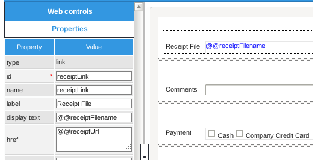When a case is run, the URL and filename of the receipt file should automatically be inserted in the subsequent DynaForm.
Link to files in grid
When a grid contains a file field, files can be uploaded for each row in the grid. However, if that same grid is redisplayed in a subsequent DynaForm, the uploaded files will not be displayed in the grid.
This example shows how to get around this problem by displaying links to the uploaded files in a second grid.
First, create the first DynaForm from where the user will upload files. Inside this DynaForm place a grid with the name and variable "Documents". Inside this grid place a file control named "Receipts".

Then, create the second DynaForm to display the file links. In this Dynaform, place a grid whose ID and variable are named "FilesList", which has the following controls:
- A textbox with ID "fileName",
- A link control with ID "fileLink",
- A textbox with ID "uploader",
- A datetime control with ID "date".
Once done, create the following trigger which is set to fire before the second DynaForm:
$query = "SELECT D.*, C.CON_VALUE
FROM CONTENT C, APP_DOCUMENT D
WHERE D.APP_DOC_UID = C.CON_ID
AND D.APP_UID = '".$appUid."'
AND C.CON_CATEGORY = 'APP_DOC_FILENAME'
AND C.CON_LANG = '".@@SYS_LANG."'";
$result = executeQuery($query);
@=FilesList = array();
$g = new G();
$i = 1;
foreach ($result as $row) {
$ext = explode('.',$row['CON_VALUE']);
$server = ($g->is_https() ? 'https://':'http://') . $_SERVER['SERVER_NAME'].':'.$_SERVER['SERVER_PORT'];
$inputDocPath = $server .'/sys' . @@SYS_SYS .'/'. @@SYS_LANG .'/'. @@SYS_SKIN .'/cases/cases_ShowDocument?a='. $row['APP_DOC_UID'];
$aUser = userInfo($row['USR_UID']);
$uploader = $aUser['firstname'] .' '. $aUser['lastname'] .' ('. $aUser['username'] . ')';
@=FilesList[$i] = array(
'fileName' => $row['CON_VALUE'],
'fileLink' => $inputDocPath,
'uploader' => $uploader,
'date' => $row['APP_DOC_CREATE_DATE'],
);
$i++;
}
The query used in the trigger searches for all the files in the current case:
FROM CONTENT C, APP_DOCUMENT D
WHERE D.APP_DOC_UID = C.CON_ID
AND D.APP_UID = '".@@APPLICATION."'
AND C.CON_CATEGORY = 'APP_DOC_FILENAME'
AND C.CON_LANG = '".@@SYS_LANG."'"
When a case is run, the files which were uploaded in the first DynaForm grid:
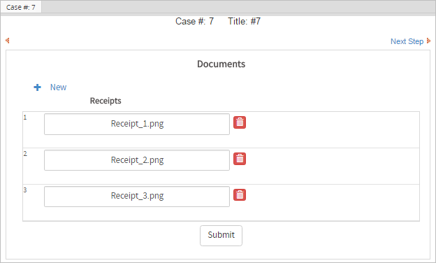Each one of these files will be listed with a link to be downloaded, the username who uploaded and date when the file was uploaded in the second DynaForm grid:

To see a process which demonstrates how to use this code, download and import this sample process.
Getting file info in v.3.0.1.8 and later
It is much easier to get information about the file uploaded in a File control in version 3.0.1.8 and later, because a variable is created which holds an array with the file's unique ID. See Variable Storage above. This trigger example shows how to use the AppDocument::Load() method to get information about the uploaded file and construct a URL to download the file.
$fileId = @=contractFile[0];
$d = new AppDocument();
$aFile = $d->Load($fileId);
$aUser = userInfo($aFile['USR_UID']);
@@fileUploader = "{$aUser['firstname']} {$aUser['lastname']} ({$aUser['username']})";
@@filename = $aFile['APP_DOC_FILENAME'];
@@fileComment = $aFile['APP_DOC_COMMENT'];
@@dateUploaded = $aFile['APP_DOC_CREATE_DATE'];
//for email and output document templates:
@@fileUrl = "http://{$_SERVER['SERVER_ADDR]}:{$_SERVER['SERVER_PORT']}/sys" . @@SYS_SYS .
"/en/neoclassic/cases/cases_ShowDocument?a='{$aFile['APP_DOC_UID']}&v={$aFile['DOC_VERSION']}";
//for links in DynaForms:
@@fileRelativeUrl = "../cases/cases_ShowDocument?a='{$aFile['APP_DOC_UID']}&v={$aFile['DOC_VERSION']}";
}
@@fileUrl in the src property (used to be named href) of the Link control. See Manipulating Links in Triggers.